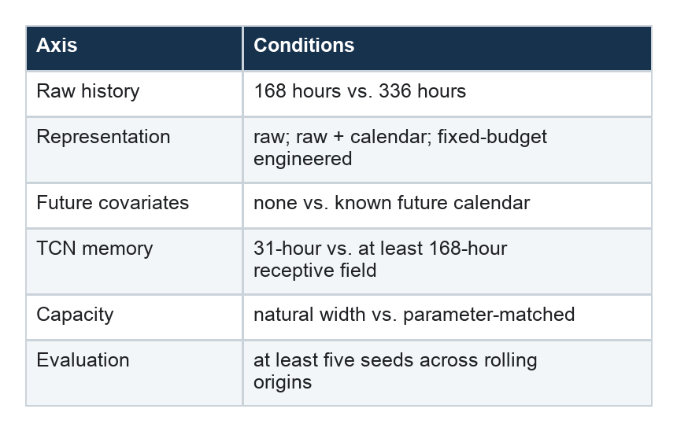

How to Design a Time-Series Experiment You Can Trust
A rigorous protocol for comparing models, features, and forecasting decisions
Series: Sequence Models for Prediction, Part 15 of 16
A good ablation removes one thing.
That sounds obvious until “one thing” is a feature set. Adding ten time-series features can simultaneously change:
- the oldest raw observation available to the model;
- the number of trainable parameters;
- the shortest path between seasonal values and the output;
- optimization difficulty;
- missing-value warm-up;
- and, if future covariates are involved, the forecasting interface itself.
The original electricity-demand notebook is a useful prototype because it exposes these issues in a small, reproducible setting. Here is how I would turn it into a more defensible study.
1. Define the forecast contract first
Write down what is known at prediction time before choosing a model.
For this task:
forecast issued at: t
targets: demand[t : t+24]
observed target: available through demand[t-1]
calendar: known for all future horizons
Then classify every field:
- observed historical: demand and any sensor values available through
t-1; - known future: hour, weekday, holidays, tariffs, or schedules known through
t+23; - static: household or meter metadata;
- derived historical: lags, differences, and rolling summaries.
This prevents historical calendar features from being confused with explicit future-known inputs.
2. Separate representation budget from information budget
The current engineered tensor has 168 rows, but its lag_168 channel reaches back to t-336. The demand-only tensor reaches only to t-168.
Run two complementary ablations.
Fixed raw-history ablation
Every representation may use only the raw demand observations in:
[t-168, t-1]
Derived fields that require earlier values must be masked, reformulated, or calculated once at the forecast origin from the allowed window.
This answers:
Can handcrafted transformations help a model use the same evidence?
Fixed oldest-timestamp ablation
Give the raw model all 336 hours that the engineered sequence can indirectly access.
This answers:
Can manual summaries compress a larger historical context more effectively than the architecture consumes it directly?
Both questions are useful. Mixing them produces an ambiguous answer.
3. Match receptive field to the hypothesis
If the study asks whether a TCN can learn a weekly lag, the TCN’s output must be able to depend on data at least 168 steps back.
For kernel size three and one layer at each dilation, use:
dilations = [1, 2, 4, 8, 16, 32, 64]
receptive field = 1 + 2 × 127 = 255 hours
Alternatively, keep the 31-hour TCN and describe it honestly as a short-context model. Then the experiment becomes a test of whether engineered features can inject long-range summaries into a local architecture.
That is a legitimate and practically relevant question—just a different one.
4. Control capacity, not only model class
For recurrent and convolutional models, changing input channels causes a relatively modest parameter increase. For flattened models, the increase is dramatic.
In the notebook:
- MLP grows from roughly 79,000 to 724,000 parameters;
- N-BEATS-style grows from roughly 673,000 to 4.55 million;
- linear grows from roughly 4,000 to 65,000.
A stronger study should report two tracks:
- architecture fixed: preserve the original hidden sizes and observe the practical consequence of adding features;
- capacity matched: adjust hidden widths or add an input bottleneck so parameter counts remain comparable.
The first reflects what a practitioner might naturally code. The second isolates representation more cleanly.
5. Give each configuration a credible training budget
A universal epoch cap does not mean equal training. The notebook’s shallow CNN was still improving at epoch 15, while several other models had already stopped.
Use:
- a generous maximum epoch count;
- early stopping with a clearly declared patience;
- learning-rate reduction or a comparable scheduler;
- checkpoint selection using validation data only;
- logged convergence curves for every run.
If one family consistently hits the maximum while improving, extend its budget before comparing test scores.
Hyperparameter tuning creates another choice. Either use one predefined configuration per architecture and present the work as a controlled teaching experiment, or grant every architecture and feature set the same tuning budget. Do not tune the eventual winner more heavily after seeing test performance.
6. Estimate variance
The notebook resets seeds carefully, but it runs one seed per configuration. Differences such as the LSTM’s 0.34% engineered gain can easily be smaller than training variance.
For the most interesting configurations:
- choose seeds before running;
- train at least five repeats if compute allows;
- report mean, standard deviation, and the paired difference between feature sets;
- preserve the same forecast origins for every pair.
A paired comparison is especially useful because every model is evaluated on the same target windows.
Do not wait to inspect the first run before deciding which small difference deserves extra seeds. Predeclare a rule such as “rerun every within-family difference below 3%.”
7. Use more than one chronological split
A single held-out period answers an important operational question: how did the model generalize to this later era?
It can also make the result sensitive to unusual months or a change in household behavior.
Add rolling-origin evaluation:
train ─────── validate ─ test 1
train ─────── validate ─ test 2
train ─────── validate ─ test 3
Keep the order intact. Never randomly shuffle timestamps across train and test. The goal is not to make every fold identically distributed; it is to observe how conclusions behave across forecast periods.
8. Strengthen the baselines
Yesterday, last week, and last value are good starting points. Add baselines that can exploit the same permitted information:
- a seasonal linear regression with hour and weekday;
- a regularized direct linear model over the raw window;
- a simple average or weighted combination of yesterday and last week;
- CatBoost or another well-tuned gradient-boosted tree model over the causal engineered features.
For a multi-horizon target, state whether boosting uses one model per horizon, a native multi-output objective, or a wrapper. Give it the same forecast origins, allowed raw-history reach, and tuning discipline as the neural candidates.
If a complex model’s gain disappears against a tuned linear or boosted-tree baseline, that is a valuable result. On many limited-data tabular forecasting tasks, it should be treated as an expected possibility rather than an embarrassment.
9. Audit preprocessing as part of the model
The notebook correctly uses training-only target scaling and causal forward fill. A production-grade follow-up should also test:
- a binary missingness channel;
- maximum forward-fill duration;
- robustness to contiguous missing blocks;
- daylight-saving and timezone handling;
- whether hourly averaging is available before the forecast deadline;
- distribution shifts in mean and variance.
Preprocessing is not merely cleanup. It defines the information presented to the learner.
10. Report results at the level decisions are made
Aggregate RMSE and MAE are useful, but a 24-hour forecast is a vector.
Report:
- MAE and RMSE overall;
- error at each horizon from 1 to 24;
- error by hour of day and weekday/weekend;
- performance during demand peaks;
- training time, inference time, and parameter count;
- mean and variation across seeds and time folds.
If the forecast will drive an operational decision, add a metric aligned with that decision. A model that slightly improves average RMSE but misses the daily peak may be the worse system.
A revised experiment matrix
The follow-up does not need dozens of loosely related runs. A compact matrix can answer the core questions:

The most informative comparisons are planned pairs, not one giant leaderboard.
The conclusion should name its conditions
Weak conclusion:
Transformers do not need feature engineering.
Defensible conclusion:
On this household-demand dataset, under a direct 24-hour objective and a fixed 168-hour raw-history budget, the tested Transformer’s mean RMSE changed by X% after causal lag and rolling transformations were added across five seeds and three forecast periods.
Specific language is not timid. It is what allows another practitioner to decide whether a finding applies to their own data, horizon, and architecture.
The lasting lesson from this series is not that raw data or engineered features always win.
It is this:
A feature is part data, part representation, and part information path. A trustworthy ablation controls all three—or says clearly which one it is changing.
Further reading
- UCI Individual Household Electric Power Consumption dataset
- Temporal Fusion Transformers for Interpretable Multi-horizon Time Series Forecasting
- A Time Series Is Worth 64 Words: Long-Term Forecasting with Transformers
- N-BEATS: Neural Basis Expansion Analysis for Interpretable Time Series Forecasting
Series navigation: Series index · Previous: Calendar and lagged features · Next: Local versus global stock models